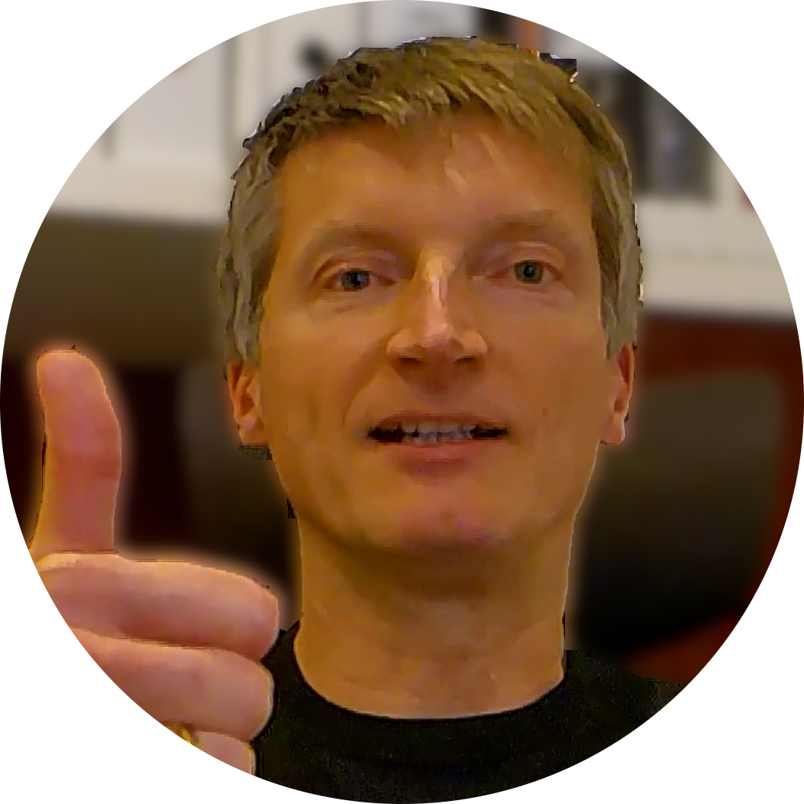

|  |
Gunnar Seebachborn 1973 in Braunschweig, Germany married with 2 children |
| 2001 - 2008 |
test engineer for vehicle dynamics systems Robert Bosch GmbH |
| 2008 - 2014 |
technical project coordination and project management for vehicle dynamics systems Bosch Engineering GmbH |
| 2014 - 2017 |
software development for driving assist systems Bosch Engineering GmbH |
| 2017 - 2019 |
team lead, test infrastructure for automated driving systems Robert Bosch GmbH |
| 2019 - 2021 |
system engineering for park assist systems Audi AG / CARIAD SE |
| 2022 - |
tool development Audi AG |